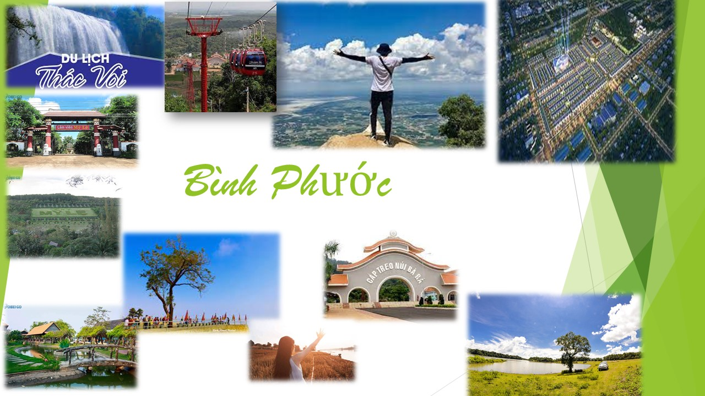

Bù Lạch là một trảng cỏ hoang sơ,nơi đây gồm 20 trảng cỏ lớn nhỏ khác nhau,diện tích lên đến 500ha. Đây là địa điểm cắm trại, dã ngoại lý tưởng,thu hút du khách trong và ngoài tỉnh.Check-in trảng cỏ, du khách sẽ trầm trồ thảm động thực vật phong phú, đặc biệt là nhiều chủng loại hoa phong lan.